La División de Educación a Distancia en Entornos Virtuales -DEDEV- de la Dirección General de Docencia de la Universidad de San Carlos de Guatemala, se constituye como la instancia académica-tecnológica responsable de generar propuestas pedagógicas en el campo de los entornos virtuales de aprendizaje para el perfeccionamiento y tecnificación del sistema educativo superior y el fortalecimiento de la formación estudiantil, docente y profesional; con las exigencias de estándares de calidad requeridos a nivel nacional e internacional, centrados en las modalidades de educación abierta, a distancia, virtual y en línea.
Ofrece programas novedosos, actualizados científica y tecnológicamente que permiten satisfacer las exigencias de formación docente de la Universidad y que a la vez coadyuvan al desarrollo socioeconómico y científico-cultural del país, operacionalizando así lo establecido en la Política de Educación a Distancia en Entornos Virtuales de esta casa de estudios.
En ese contexto, la DEDEV busca dar respuesta a las constantes transformaciones socio-económicas, geopolíticas y científico-tecnológicas generadas como consecuencia de la globalización, que sitúan a la Universidad de San Carlos de Guatemala frente a nuevos escenarios y desafíos, en los cuales el tema de la educación virtual como producto de la tecnología aplicada a la educación superior está destinado a constituirse en uno de los objetivos estratégicos para el cumplimiento de sus fines relacionados con docencia, investigación y extensión.
La dependencia académica-tecnológica de la Dirección General de Docencia, responsable de ejecutar la Política de Educación a Distancia en Entornos Virtuales de la Universidad de San Carlos de Guatemala.
Ser la instancia líder en Educación a distancia y virtual de la Universidad de San Carlos de Guatemala que coadyuve a ampliar la cobertura educativa, el intercambio del conocimiento y ofrecer alternativas educativas integrales que superen las limitaciones de tiempo y espacio, a través de la implementación de las mejores prácticas pedagógicas y tecnológicas.
Trabajar en el desarrollo de las modalidades de enseñanza-aprendizaje (abierta, a distancia, virtual y en línea) para los programas oficiales de la Administración Central y el acompañamiento de la implementación en las distintas unidades académicas de la Universidad.
Somos la instancia responsable de implementar e innovar prácticas educativas a través de la gestión del conocimiento y la investigación, así como del aprendizaje en ambientes virtuales utilizando tecnologías educativas tales como recursos didáctico-metodológicos, para la consecución de los fines de la Universidad de San Carlos de Guatemala.